PHPStorm and D8
Presentation by Kyle Einecker
About me

About you
Currently using PHPStorm?
Currently using XDebug?
Using automated code testing or ?
vim joke here
Plugins
Git
Tool window
View > Tools Windows > Version control
- Press the grey box in the bottom left of the window
- Select Version control on bottom bar
History
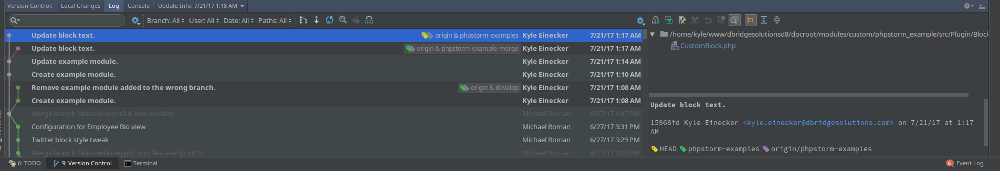 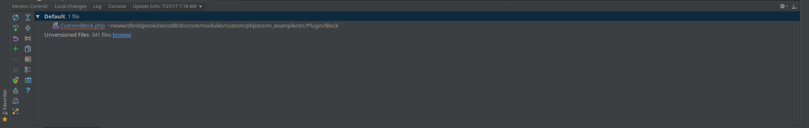Local history
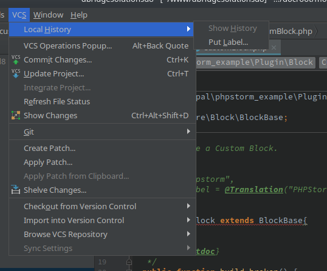Diff
Select any blue file in the git log view or git local changes view
ctrl+d
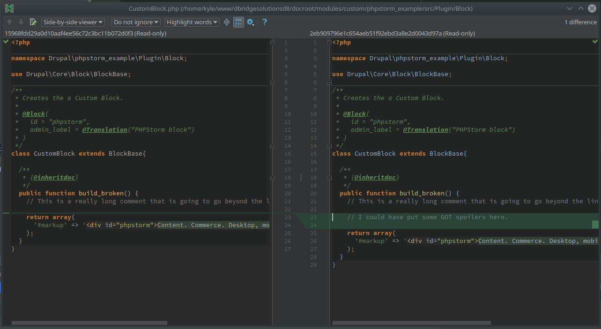Linting and Sniffing
phpcs
Installation instructions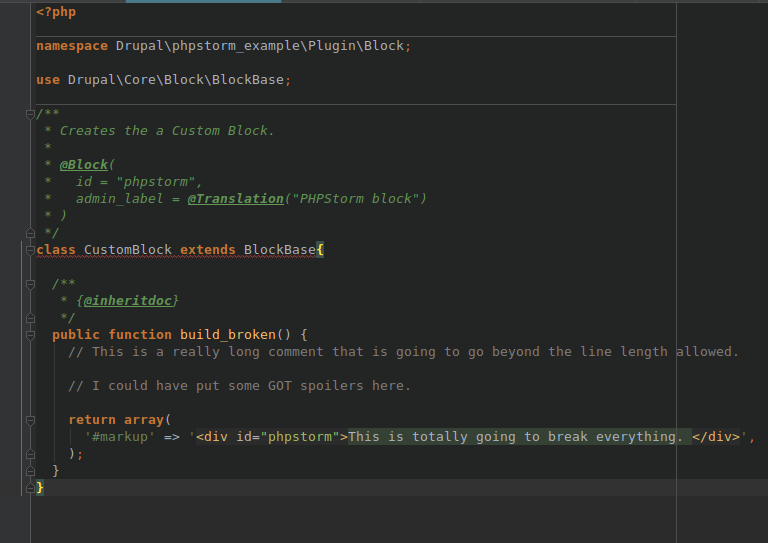 vs 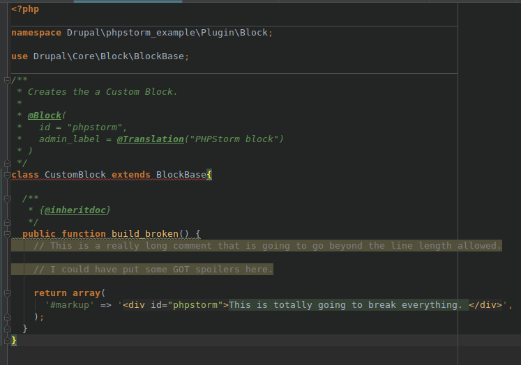
stylelint
Drupal change recordNew in 8.4
Will be available to contrib modules and themes eventually
eslint
sass-lint
Alternative to stylelint
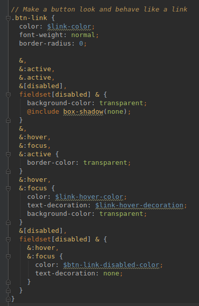 vs 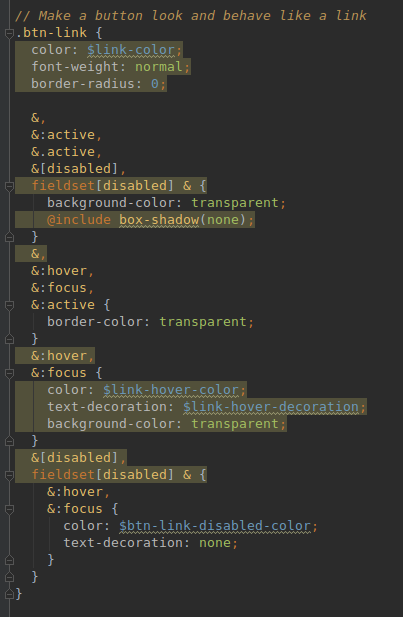Navigating code
Select any blue file in the git log view or git local changes view
ctrl+d
Search everywhere
shift+shift
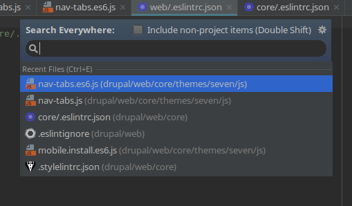
Hierarchy view
ctrl+h
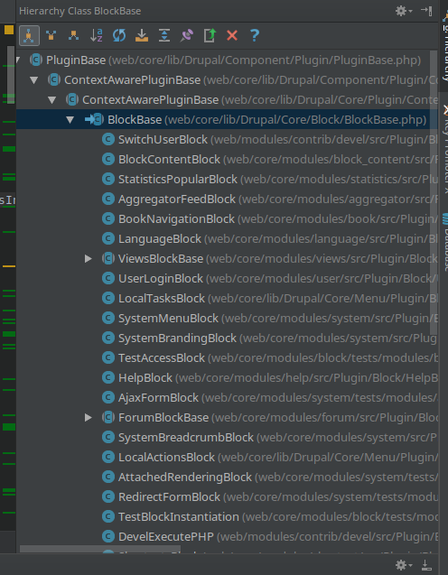
Copy path
Full path
ctrl+shift+c
/home/kyle/vms/drupal-vm/drupal/web/core/lib/Drupal/Core/Block/BlockBase.phpRelative path
ctrl+shift+alt+c
web/core/lib/Drupal/Core/Block/BlockBase.php:29Function definition
Works on function calls and {@inheritdoc}
ctrl+q
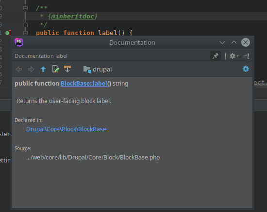
Go to function deceleration
ctrl+b
ctrl+click
Find usages
alt+f7
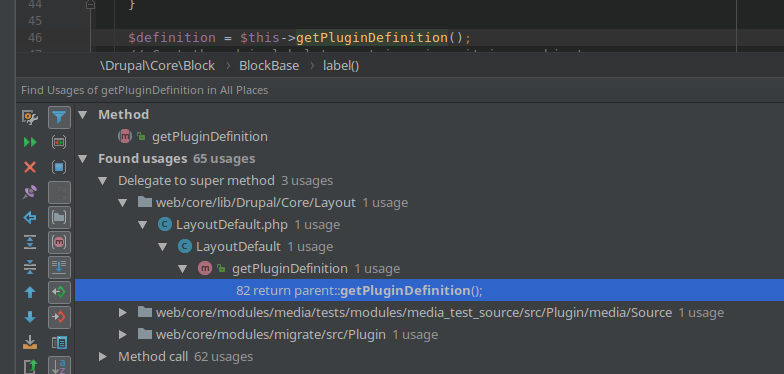
Gutter icons
I
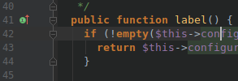
Shows implementations of parent methods or children implementing a method.
O
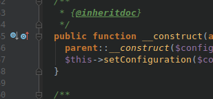
Shows if a method is overriding a parent or is overridden by a child.
H
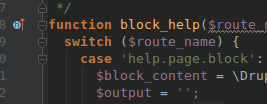
Shows hook documentation in *api.php, all implementations of the hook, and where the hook is called.
Code completion and boiler plates
Drupal console

Implement interface methods
Drupal change recordNew in 8.4
Will be available to contrib modules and themes eventually
eslint
sass-lint
Alternative to stylelint
vs